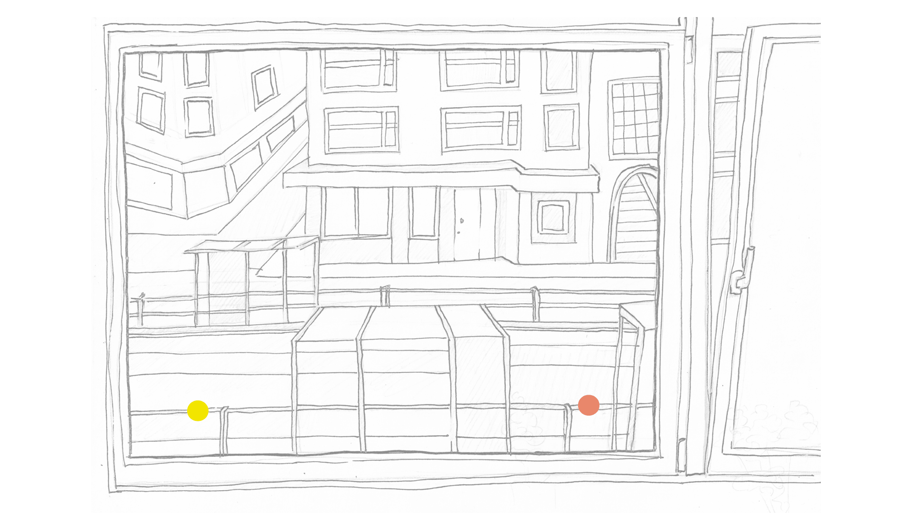
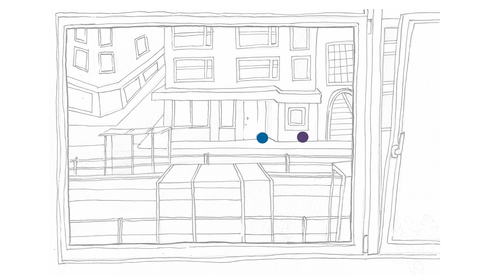
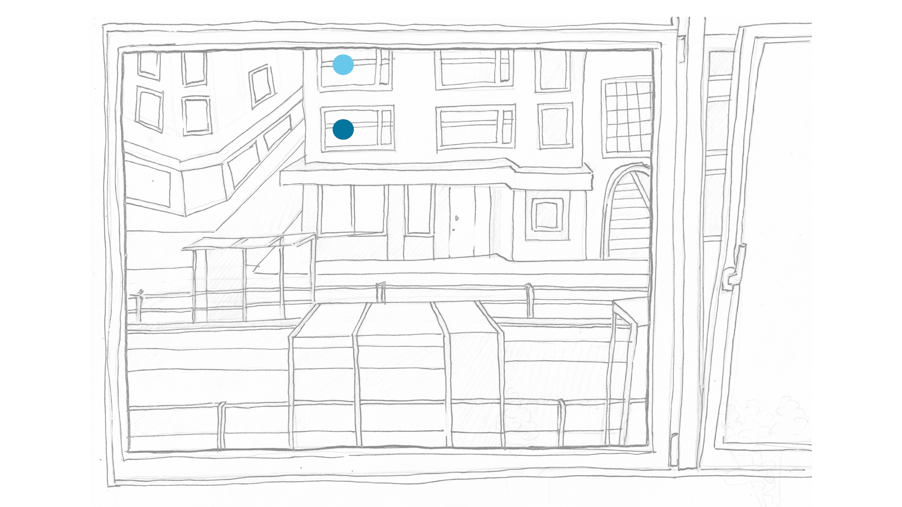
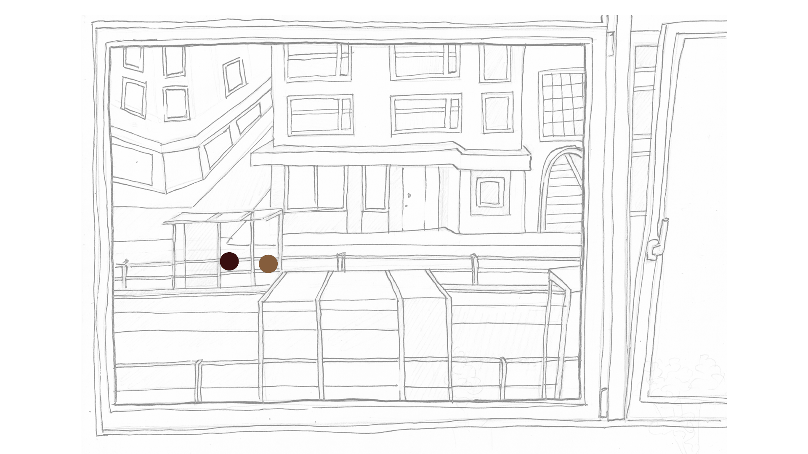
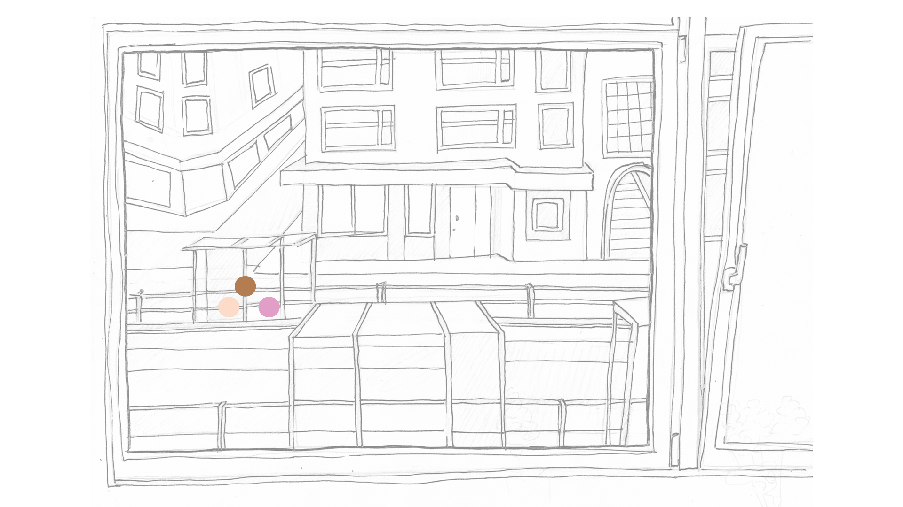
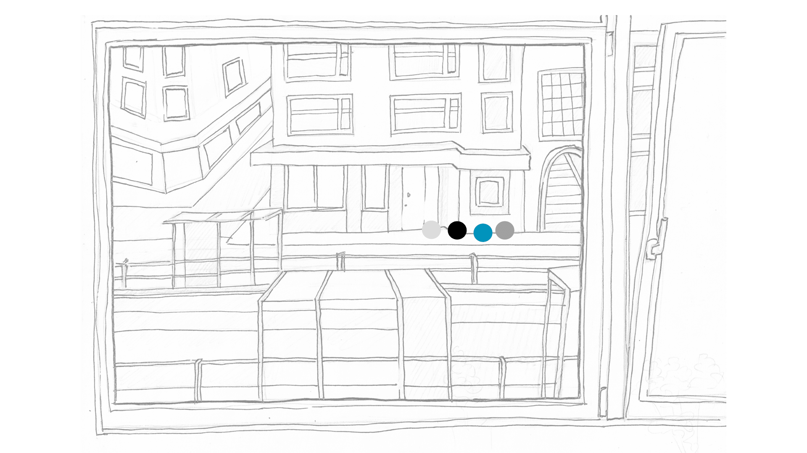
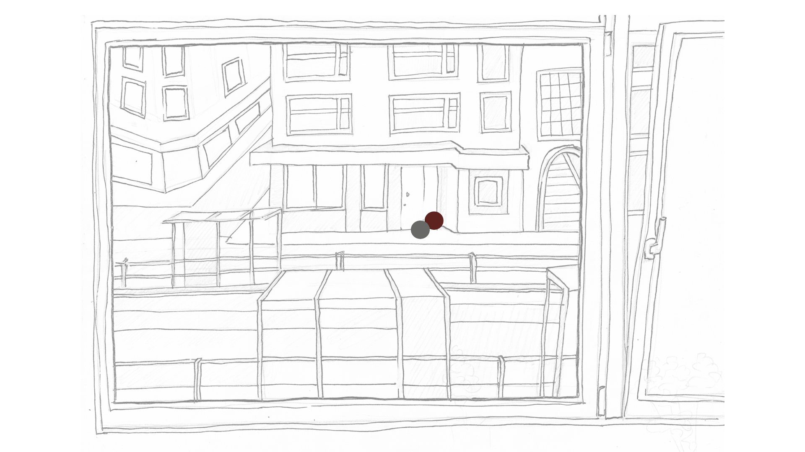
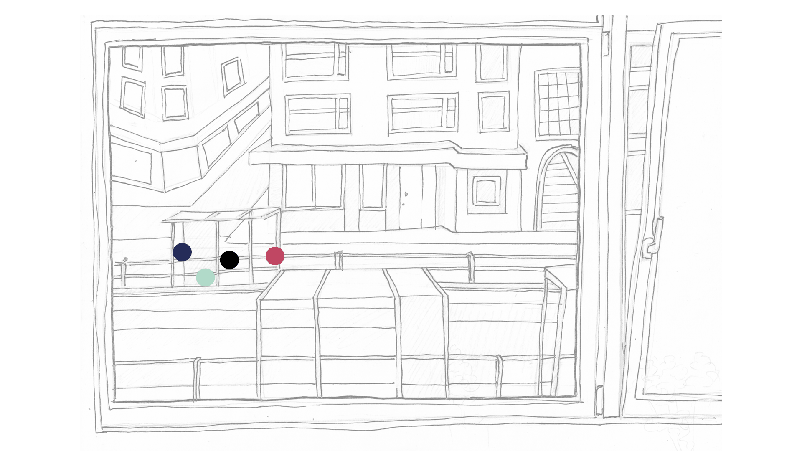
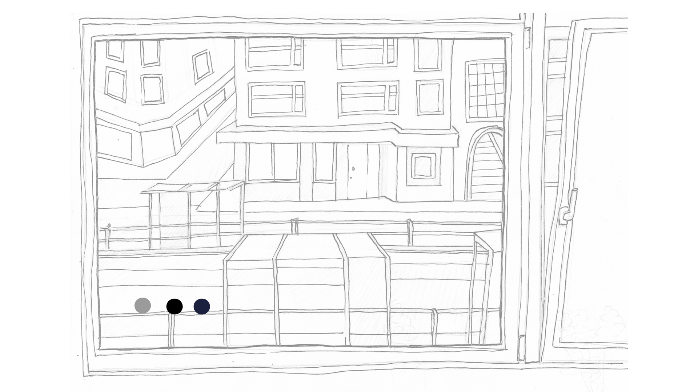
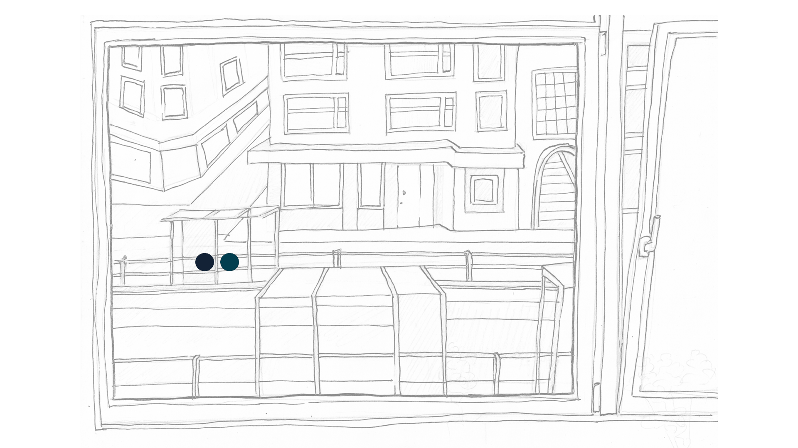
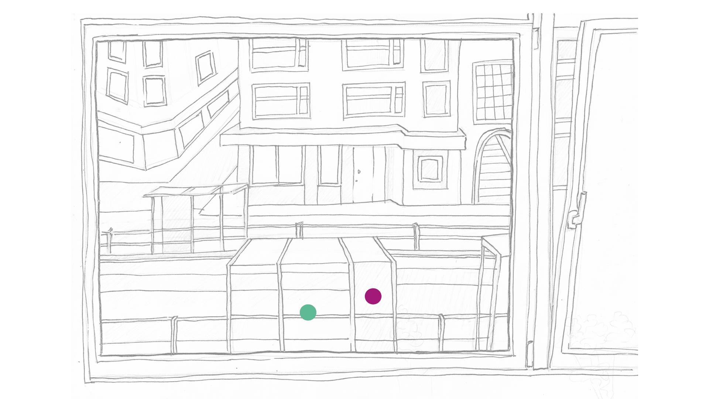
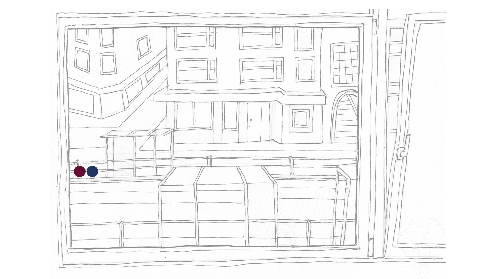
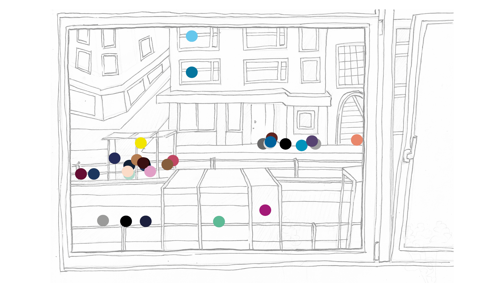
This is a Polish experimental film “Out of My Window” filmed by Józef Robakowski at the time of Poland being a soviet sattelite state. The piece was made to show an individual perspective on a socialist, collectivist country and the routines that it permeated.
Since watching the film at 17 years old, I’ve tried doing the same excercise; sitting by my window, I look at the street in front, and observe the habits or connections of the people I have no clue about. This is the first difference I’ve caught between me, and Robakowski. The artist, knowing everyone at his apartment complex, saw the actual facts and reality, based on the conversations he had with his neighbours. I, on the other side, do not even know the name of people I share a wall with, leaving me to speculate, project onto the ones I see everyday, or just once. Did the Western system permeating my routine make me an individualised spectator of my closest environment?
When I moved into my 20m2 apartment in Laak, a migrant, worker district of The Hague, I looked it up online. I could not find a single positive opinion on reddit; it was filled with classist, xenophobic and racist opinions, mixed with comments about the lousy upkeeping of trash on the sidewalks. I did not want to look from my window with that intention; looking for deviations, dangers and other discriminatory projections alongside my neighbours. To do that, I gave myself a new task while looking out of my window; find community, or at least see if any already exists. Remembering people who I’ve seen together a few times already, mapping common hang-out or waiting spots, or just speculating on possible new friendships.
Yet, after the collection was made, I’ve realised that the system I made led to the same thing I did not want to do; Pattern of Life Analysis (PoL) does the same thing; developed for military surveillance and counterterrorism, it uses and tracks data on presence, groupings and known spots - deviation is something seen through other spectator’s windows or CCTV cameras, when one steps away from these marks. The method did not care about my intention; the structure of the observation was scarily identical.
Maybe the alternative is hidden in subverting Robakowski’s idea, now. Maybe now one has to develop a communal view onto the individualised system. But to do that, I need to leave my window alone, and talk to those I’ve marked on this website.